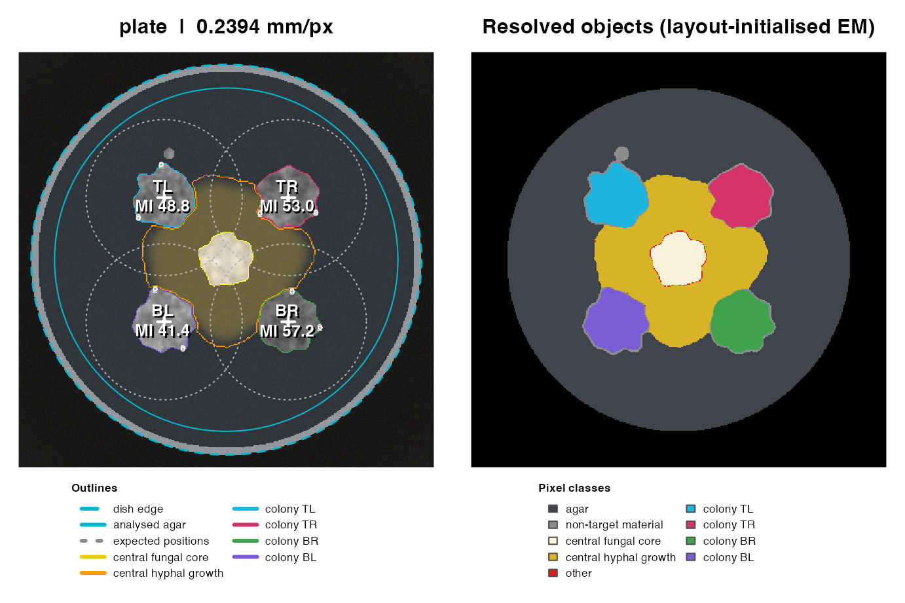

FUNGAL CONFRONTATION ASSAYS
Photographs. Colony measurements. Matched controls.
Measure four approximately round Zymoseptoria tritici colonies around another fungus, retain their image provenance, and compare each treatment with its own experimental controls.
Learn the objects, try a simulated plate, then prepare your photographs.
Follow the complete eight-photo 14-day tutorial, including metadata, spot tables and exported figures.
Explore the indexed function catalog for specialist calibration, training and measurement tools.
1. Install and load
Run installation once. After updating, restart R before loading the new package. In RStudio use Session → Restart R; other R applications can be closed and reopened. A loaded package should not be replaced in the same session.
install.packages("remotes")
remotes::install_github("mghotbi/FunMel")
library(FunMel)
packageVersion("FunMel")
#> [1] '0.4.16'R >= 4.1 and a source-compilation toolchain are required: Xcode
Command Line Tools on macOS, matching Rtools on Windows, or R
development tools and ImageMagick development libraries on Linux. To
include locally installed vignettes, install with
build_vignettes=TRUE, dependencies=TRUE:
remotes::install_github("mghotbi/FunMel",build_vignettes=TRUE,dependencies=TRUE)
vignette("FunMel",package="FunMel")
vignette("Real-14-day",package="FunMel")2. See one plate before starting a project
This self-contained example uses a schematic image, not biological data. It shows the default arrangement: four target colonies and a central fungal partner.
sim <- simulate_plate(width=400,height=400,seed=1)
plate_result <- analyze_plate(sim$image,n_spots=3,spot_radius_mm=0.4,
n_boot=20,verbose=FALSE)
plate_result$colonies[,c("colony_id","detected","MI_mean","MI_spot_mean")]
#> colony_id detected MI_mean MI_spot_mean
#> 1 TL TRUE 48.81529 45.58140
#> 2 TR TRUE 52.99384 51.84266
#> 3 BR TRUE 57.17307 57.43442
#> 4 BL TRUE 41.43033 43.49997
plot_qc(plate_result)
Simulated plate: target-colony masks and central fungal core/hyphal-growth candidates.
Check the target outlines, central fungal tissue, connected hyphae and spot positions. These are image-based candidates, not species identifications or inhibition boundaries. The 20 bootstrap replicates keep teaching examples quick; they are not intended for precise uncertainty estimates.
For a control without a central fungus:
control_layout <- plate_layout(centre="none")
control_result <- analyze_plate(example_plate("control"),layout=control_layout,
max_dim=1200,n_boot=20)Melanization index is MI = 100 − CIELAB L*. A larger value means darker pixels. It is an image-darkness proxy, not measured melanin concentration. Exposure, lighting, colour calibration and masks affect the measurement.
3. Choose the right starting point
| What you have | What to do |
|---|---|
| No data yet; you want to learn | Continue with the real 14-day tutorial |
| A new photo ZIP | Use prepare_experiment() and select the ZIP |
| A new folder of photographs | Supply its full path, or select one original photo with
prepare_experiment()
|
| Several batches in nested folders | Supply the common root folder or ZIP so every batch and its controls are included |
| Saved measurements from an earlier session | Use load_experiment(); do not prepare the project
again |
A file chooser selects files, not folders. Selecting one original photograph uses its containing folder and subfolders; the package prints the exact folder it will scan. It includes all supported photographs there, not just the selected image. For multiple batches, select their ZIP or supply the common root folder path. Do not select a QC figure or metadata CSV as an original photograph.
New photographs: prepare once
Choose one of these alternatives:
project <- prepare_experiment() # Choose a photo ZIP or one original photo.
# Alternative: replace this example path with the common photo-folder root.
project <- prepare_experiment("/full/path/to/photos","FunMel_project")Use a new output folder. An existing nonempty output is protected against replacement. If work is already saved, use the reopening instructions below.
Saved work: reopen and read
project <- load_experiment() # Choose project.rds in its current project folder.
result <- read_experiment(project)
head(result$colonies)
head(result$spots)Keep the complete project folder together when moving it. The loader
reconnects internal paths. Original photographs outside that folder keep
their external paths; they are needed for remeasurement, not for reading
or finalizing saved measurements. project$result_file is a
filename; result$spots is a table.
4. Check the experimental design
project$metadata_file
metadata <- read.csv(project$metadata_file,check.names=FALSE)
metadata[,c("plate_id","set_id","treatment","centre_model")]
validate_metadata(metadata)A unique plate_metadata.csv in the input is read
automatically. Otherwise the package creates a template, proposing
labels only for explicit structures such as batch1/control/
and batch1/fungus_A/. Folder names cannot prove biological
assignments. Correct missing or inaccurate information using
laboratory records before analysis.
| Field | Required interpretation |
|---|---|
plate_id |
Globally unique independent plate, photographed once |
file, relative_file
|
Original image provenance; preserve the relative path |
set_id |
Matching treatment and control group; controls are never borrowed from another set |
treatment |
Exact label control for controls; consistent actual
treatment labels otherwise |
centre_model, partner_type
|
none for controls, normally fungus for
confrontation plates |
day, medium, zymo_strain
|
May be entirely unrecorded; once recorded, complete and constant within each set |
| Other fields | Retained experimental annotations, including user-defined columns |
For one control plus three treatment plates, enter four rows sharing
a set_id; enter the control once. Four colonies per plate
and multiple spots per colony are subsamples, not independent biological
replicates. Repeated images of the same plate are not new independent
replicates.
For a nested ZIP, relative paths distinguish identical basenames.
Supply one combined metadata table with metadata= when
there are multiple metadata files. Use control_folders="C"
only when that exact label genuinely denotes controls.
5. Measure, inspect and finish
dish_mm <- 90 # Replace with the verified outer diameter of your dishes (mm).
result <- run_experiment(project,dish_diameter_mm=dish_mm,max_dim=1200,
n_spots=5,spot_radius_mm=0.4)
result$analysis_status
result$failed
project$qc_dirA completed run reports "complete" and zero failed
images. Inspect every QC PNG for target masks, central fungal
tissue/hyphae, spots, scale, lighting and warnings before
interpretation. Informative QC warnings do not block the default
workflow. Genuine failures still require correction; successful
processing is not automatic biological validation.
The diameter must be an actual, finite positive measurement. All
plates in one run use that setting; analyze different dish sizes
separately. Omit n_spots and spot_radius_mm
for whole-colony measurements only.
reviewed <- finish_experiment(project)
reviewed$melanization_coefficient
reviewed$assessment$status
print(plot_treatment_comparison(project))Finalization reuses saved measurements and exports CSV tables, an
assessment RDS, and a treatment comparison in PDF, SVG and 600-dpi PNG.
Different recorded contexts are finalized into separate folders listed
in context_index.csv.
6. Read the results correctly
| Result | Meaning |
|---|---|
colonies / colonies.csv |
Whole-colony colour, area, MI and optional spot summaries |
spots / spots.csv |
One row per achieved circular ROI, with coordinates and pixel summaries |
profiles / profiles.csv |
Edge-to-centre darkness measurements |
plates / plates.csv |
Plate-level detection, calibration and illumination status |
metadata / metadata_used.csv |
Complete metadata with custom names and values retained |
melanization_coefficient |
Set-specific treatment-to-own-control ratios |
| treatment_comparison_statistics.csv | Means, SDs, counts and descriptive values plotted in the figure |
Whole-colony MI_min, MI_mean and
MI_max describe eligible interior pixels, excluding the rim
and saturated/specular pixels. MI_spot_mean/min/max
summarize individual spot means, not the
darkest/lightest whole-colony pixels or confidence limits. Spot
placement is deterministic, spatially spread and non-overlapping. Check
n_spots_measured and spot_status; incomplete
summaries are unavailable rather than invented.
The default coefficient divides the mean of treatment plate MI values by the mean of control plate MI values in the same set. Each plate averages its eligible target-colony MI means equally. Values above 1 indicate a darker image-based treatment mean, not a pigment-concentration fold change. Overall summaries weight set-specific ratios equally, rather than pooling all controls.
One control per set permits descriptive ratios but not the package’s
replicated-cell significance tests. With adequate replication,
assess_experiment() uses
lme4/lmerTest, matched-set contrasts and Holm
adjustment. Review model status, convergence, singularity, assumptions
and experimental coverage before interpreting inference. The comparison
plot itself is descriptive: bars show one between-plate SD, not
confidence intervals; ratio SD conditions on the shared control mean and
omits its uncertainty.
A prespecified, consistently applied spot-based descriptive analysis
may use
melanization_coefficient(reviewed,response="MI_spot_mean").
Keep that response separate from whole-colony MI.
7. Continue confidently
| Message or situation | Next step |
|---|---|
| Final outputs saved | Finalization succeeded; read the exported tables and figure |
| Image QC unconfirmed | Inspect masks, calibration and warnings; review before interpreting results |
| Insufficient plate replication | Use descriptive results; do not interpret absent p-values as a software failure |
| Missing treatment or matching control | Complete actual assignments; another batch’s control is not a substitute |
| Selected metadata CSV, PDF or SVG | Reopen project.rds, or choose the original photo ZIP/photo |
| Output folder already exists | Reopen its project.rds rather than preparing over saved work |
| Missing saved file | Open the current complete project folder; restore genuinely missing files |
| Flat-field correction withheld | Inspect illumination status; withholding does not demonstrate adequate lighting |
| Spots cannot fit | Inspect masks and use consistent feasible spot settings across compared plates |
Custom metadata is retained; measurement-name conflicts receive a
metadata_ prefix only in measurement tables. The full
metadata keeps original names. Changed segmentation layouts require
reanalysis because the saved masks differ.
Next: work through the
real photographs, explore every
exported function, or read the installed
guides/FunMel_overview.md for algorithms and use alongside
ImageJ/Fiji.
Comparison captions are exported separately as
treatment_comparison_caption.txt. Use
caption="brief" or caption="full" in
plot_treatment_comparison() to include a caption beneath
the figure.